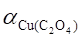
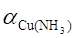
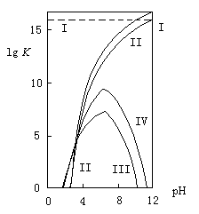
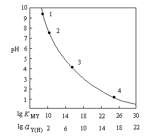
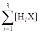
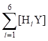
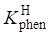
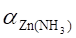

络合滴定题目D
0701 以下表达式中,正确的是------------------------------------------------------------------------( )
c(MY) [MY]
(A) K'(MY) = ───── (B) K'(MY) = ────
c(M)c(Y) [M][Y]
[MY] [M][Y]
(C) K(MY) = ───── (D) K(MY) = ────
[M][Y] [MY]
0702 已知Ag+-S2O32-络合物的lgb1~lgb3分别是9.0,13.0,14.0。以下答案不正确的是---( )
(A) K1=109.0 (B) K3=101.0 (C) K不(1)=10-9.0 (D) K不(1)=10-1.0
0703 EDTA的酸效应曲线是指----------------------------------------------------------------------( )
(A) aY(H)-pH 曲线 (B) pM-pH 曲线
(C) lgK'(MY)-pH 曲线 (D) lgaY(H)-pH 曲线
0704 若络合滴定反应为: M + Y = MY,则酸效应系数aY(H)表示--------------------------------( )
│H+
HiY(i=1-6)
(A) [Y]/c(Y) (B) ∑[HiY]/c(Y)
(C) [Y]/([Y]+∑[HiY]) (D) ([Y]+∑[HiY])/[Y]
0705 若络合滴定反应为: M + Y = MY,以下各式正确的是-------------------------------------( )
│H+
HiY(i=1-6)
(A) [Y']=[Y]+[MY] (B) [Y']=[Y]+∑[HiY]
(C) [Y']=∑[HiY] (D) [Y']=c(Y)-∑[HiY]
0706 在pH为10.0的氨性溶液中, 已计算出aZn(NH3)=104.7, aZn(OH)=102.4, aY(H)=100.5。则在此条件下lgK'(ZnY)为----------------------------------------------------------------------------------------- ( )
[已知 lgK(ZnY)=16.5]
(A) 8.9 (B) 11.8 (C) 14.3 (D) 11.3
0707 aM(L)=1表示---------------------------------------------------------------------------------------( )
(A) M与L没有副反应 (C) M与L的副反应相当严重
(C) M的副反应较小 (D) [M]=[L]
0708 指出下列叙述中错误的结论-------------------------------------------------------------------( )
(A) 络合剂的酸效应使络合物的稳定性降低 (B) 金属离子的水解效应使络合物的稳定性降低
(C) 辅助络合效应使络合物的稳定性降低 (D) 各种副反应均使络合物的稳定性降低
0709 在氨性缓冲液中用EDTA滴定Zn2+至化学计量点时,以下关系正确的是------------( )
(A) [Zn2+] = [Y4-] (B) c(Zn2+) = c(Y)
(C) [Zn2+]2= [ZnY]/K(ZnY) (D) [Zn2+]2= [ZnY]/K'(ZnY)
0710 已知 lgK(ZnY)=16.5和
|
pH |
4 |
5 |
6 |
7 |
|
lg aY(H) |
8.44 |
6.45 |
4.65 |
3.32 |
若用0.02 mol/L EDTA滴定0.02mol/L Zn2+溶液,(要求DpM=0.2,Et=0.1%)滴定时最高允许酸度是--( )
(A) pH≈4 (B) pH≈5 (C) pH≈6 (D) pH≈7
0711
以EDTA溶液滴定同浓度的某金属离子,若保持其它条件不变,仅将EDTA和金属离子浓度增大10倍,则两种滴定中pM值相同时所相应的滴定分数是---------------------------( )
(A) 0% (B) 50% (C) 100% (D) 150%
0712 在pH为10.0的氨性缓冲液中, 以0.01 mol/L EDTA 滴定同浓度Zn2+溶液两份。其中一份含有0.2 mol/L 游离NH3; 另一份含有0.5 mol/L 游离NH3。在上述两种情况下,对pZn'叙述正确的是------------( )
(A) 在化学计量点前pZn'相等 (B) 在化学计量点时pZn'相等
(C) 在化学计量点后pZn'相等 (D) 在上述三种情况下pZn'都不相等
0713
当pH=10.0, 以0.010 mol/L EDTA溶液滴定0.010 mol/L Zn2+的溶液两份, 其中一份溶液中含有0.5 mol/L游离NH3; 另一份溶液中含有0.2 mol/L游离NH3。在上述两种情况下, 对pZn的叙述正确的是--( )
(A) 加入EDTA开始滴定时pZn相等 (B) 滴定至一半时pZn相等
(C) 滴定至化学计量点时pZn相等 (D) 上述说法都不正确
0714
在pH=10的氨性缓冲液中用 EDTA 滴定Zn2+至50%处时-----------------------------( )
(A) pZn只与[NH3]有关 (B) pZn只与c(Zn)有关
(C) pZn只与lgK'(ZnY)有关 (D) pZn与[NH3]和c(Zn)均有关
0715
在pH=10的氨性缓冲液中以EDTA滴定Zn2+至150%处时-----------------------------( )
(A) pZn'只决定于lgK(ZnY) (B) pZn'只决定于lgK'(ZnY)
(C) pZn'只决定于c(Y) (D) pZn'与lgK'(ZnY)、c(Y)均有关
0716
EDTA滴定金属离子,准确滴定(Et<0.1%)的条件是----------------------------------------( )
(A) lgK(MY)≥6.0 (B) lgK'(MY)≥6.0
(C) lg[c计K(MY)]≥6.0 (D) lg[c计K'(MY)]≥6.0
0717
在pH=10的氨性缓冲液中用EDTA滴定Zn2+至50%处时------------------------------( )
(A) pZn'值只与[NH3]有关 (B) pZn'值只与lgK'有关
(C) pZn'值只与c(Zn)有关 (D) pZn'值与以上三者均有关
0718
要配制pH=4.0、pZn=7.9的溶液, 所需EDTA与Zn2+的物质的量之比[n(Y):n(Zn)]为[已知pH4.0时lgK'(ZnY)=7.9]---------------------------------------------------------------------------( )
(A) 1:1 (B) 2:1 (C) 1:2 (D) 3:1
0719
今欲配制pH=5.0、pCa=3.8的溶液, 所需EDTA与Ca2+物质的量之比[n(Y):n(Ca)]为[已知pH=4.0时,lgK'(CaY)=4.1]-------------------------------------------------------------------------( )
(A) 1:2 (B) 2:1 (C) 2:3 (D) 3:2
0720
用0.020 mol/L Zn2+溶液滴定0.020 mol/L EDTA溶液。已知lgK(ZnY)=16.5, lgaZn=1.5, lgaY=5.0, 终点时pZn=8.5, 则终点误差为--------------------------------------------------------( )
(A) +0.1% (B) -0.1% (C) +3% (D) -3%
0721
在pH=5.0的醋酸缓冲液中用0.002 mol/L的 EDTA 滴定同浓度的Pb2+。已知: lgK(PbY)=18.0, lgaY(H)=6.6, lgaPb(Ac)=2.0, 化学计量点时溶液中pPb应为---------------( )
(A) 8.2 (B) 6.2 (C) 5.2 (D) 3.2
0722
在含有NH3-NH4Cl的pH=10.0的介质中, 以0.0200 mol/L EDTA 溶液滴定20.0 mL 0.0200 mol/L Zn2+溶液, 当加入40.0 mL EDTA溶液时, 在下列叙述中, 正确的是------( )
(A) pZn'=-lgK'(ZnY) (B) lg[Zn']=pKZnY (C) lg[Zn']=lgK'(ZnY) (D) 都不正确
0723
已知Zr4+-F-络合物的各级累积稳定常数lgb1~lgb3分别为8.8,16.1, 21.9, 则该络合物的各级解离常数lgK不(1)~lgK不(3) 为________, _________和________。总的不稳定常数lgK不为_________。
0724
乙酰丙酮与Fe3+络合物的逐级累积稳定常数lgb1~lgb3分别为11.4、22.1、26.7,则稳定常数lgK2=_____, 不稳定常数lgK不(3)=_____。
0725
乙酰丙酮(L)与Zn2+形成络合物的lgK1和lgK2分别是5.0和3.8 。请填写以下各情况的pL值或pL范围。
|
Zn2+为主 |
[Zn2+]=[ZnL] |
[ZnL]最大 |
ZnL2为主 |
|
|
|
|
|
0726
乙二胺(L)与Ag+形成络合物的lgb1和lgb2分别是4.7和7.7。请说明在下列不同pL时银存在的主要形式。
|
pL=2.0 |
pL=3.0 |
pL=3.85 |
pL=6.0 |
|
|
|
|
|
0727
已知乙二胺(L)与Ag+形成络合物的lgb1-lgb2分别是 4.7和 7.7。当[AgL]达最大值时的pL为_____; AgL2为主要形式时的pL范围是__________。
0728
已知乙酰丙酮(L)与Al3+络合物的lgb1-lgb3分别是8.6、15.5和21.3,则AlL3为主要形式时的pL范围是____________ 。pL为10.0时铝的主要形式是____________ 。
0729
已知乙酰丙酮(L)与Al3+络合物的lgb1-lgb3分别是8.6、15.5和21.3,则[AlL]与[AlL2]相等时的pL值为____;Al3+为主要形式时的pL范围是______。
0730
已知乙二胺(L)与Ag+形成络合物的lgb1-lgb2分别是4.7与7.7。则AgL为络合物主要形式时pL范围是____________________ 。而pL为5.0时银的主要形式是_________ 。
0731
磺基水杨酸(H2L)的pKa1为2.6, pKa2为11.6, 以HL-为主要形式的pH范围是_______________ 。磺基水杨酸铜络合物的lgb1为9.5, lgb2为16.5, 以CuL2为主要形式的pL范围是__________ 。
0732
铬黑T(EBT)是一种有机弱酸, 它的pKa2=6.3, pKa3=11.6, Mg-EBT的lgK稳=7.0, 则在pH=10时的lgK'(Mg-EBT)值为_____ 。
0733
如下络合滴定反应中 M + Y = MY ,
│H+
HiY(i=1~6)
[Y']=_____________, c(Y)=_________________________。
0734
溶液的pH愈大, 则EDTA的lgaY(H)愈____, 如只考虑酸效应, 则金属离子与EDTA络合物的条件稳定常数K'(MY)=___________。
0735
金属离子 M 与络合剂 L 生成n级络合物,其副反应系数aM(L)的计算公式是________________________________________________。若溶液中有两种络合剂L和A同时对金属离子M产生副反应,其总副反应系数aM可表示为__________________________ 。
0736
在pH=10含有酒石酸盐(A)的氨性缓冲液中, 用0.020 mol/L EDTA 滴定同浓度的Pb2+。已知lgK(PbY)=18.0, 化学计量点时lgaY(H)=0.5, lgaPb(OH)=2.7, lgaPb(A)=2.8 (Pb2+与A 形成1:1络合物)。则化学计量点时 lgK'(PbY)=_____ , pPb'=_____ , pPbA=_____ , pPb=_____ 。
0737
EDTA滴定中, 介质pH越低, 则aY(H)值越____, K'(MY)值越____, 滴定的pM'突跃越____,化学计量点的pM'值越____。
0738
在pH=5.5的醋酸缓冲液中, 用0.020 mol/L的EDTA滴定同浓度的Zn2+,今知: lgK(ZnY)=16.5, lgaY(H)=5.5。则化学计量点时, pZn=_____, pZnY=_____, pY=_______, pY'=_______, pc(Y)=_____ 。
0739
在pH=5.0的缓冲液中以2.0×10-2mol/L EDTA滴定同浓度的Zn2+,在化学计量点时[Zn2+]=____________________ , [Y4-]=___________________ 。 [已知 lgK(ZnY)=16.5, lgaY(H)=6.5]
0740
10.05 mL 0.02000 mol/L EDTA溶液与10.00 mL 0.02000 mol/L Pb(NO3)2溶液混合[lgK(PbY)=18.0, pH=5.0时lgaY(H)=6.5], 未络合的Pb2+的浓度为________________mol/L。
0741
EDTA滴定金属M时, 若DpM'=±0.2, 则要求lg[c(M计)K'(MY)]大于_______, 才能使滴定的终点误差小于0.1% 。
0742
用0.01000 mol/L EDTA滴定20.00 mL同浓度的金属离子Mn+溶液,当EDTA加入量从19.98 mL到20.02 mL时, pM'改变了两个pM单位, 则Mn+与EDTA的条件稳定常数K'(MY)为__________。
0743
根据下表所给数据推断用EDTA滴定Ca2+(溶液的pH=13)时表中各点的pCa值。
|
浓度 |
pCa |
||
|
化学计量点前0.1% |
化学计量点 |
化学计量点后0.1% |
|
|
0.01mol/L |
5.3 |
6.5 |
7.7 |
|
0.1mol/L |
|
|
|
0744
在pH=5.0的醋酸缓冲溶液中用0.020 mol/L EDTA滴定同浓度的Pb2+,今知 lgK(PbY) = 18.0, lgaY(H)=6.5, lgaPb(Ac)=2.0。则化学计量点时 pPb'=______ , pPb=______ , pY'=________ , pY=______ , pPbY=________ 。
0745
在总浓度为0.10mol/L的银-硫代硫酸络合物的溶液中,当Ag(S2O3)35-型体的浓度等于Ag(S2O3)-型体浓度的1000倍时,溶液中游离S2O32-和Ag(S2O3)-型体的浓度各为多少?
(已知 Ag+-S2O32-形成逐级络合物的累积稳定常数b1=109.0, b2=1013.0, b3=1014.0)
0746
在1L NH3-NH4Cl的缓冲溶液中, 含0.10 mol Zn2+-EDTA络合物, 溶液的pH=9.0,[NH3]=0.10 mol/L,计算Zn2+的浓度。已知lgK(ZnY)=16.5; 锌氨络离子的lgb1 -lgb4 分别为2.27,4.61,7.01,9.06; pH=9.0时lgaY(H) =1.3。
0747
在pH=5.0的缓冲溶液中, 以2×10-2mol/L EDTA滴定相同浓度的Cu2+溶液,欲使终点误差在±0.1%以内。试通过计算说明可选用PAN指示剂。 已知: pH=5.0时PAN的pCut=8.8, aY(H)=106.6, lgK(CuY)=18.8。
0748
在一定条件下用0.010 mol/L EDTA滴定50.00 mL同浓度金属离子M2+,已知该条件下反应是完全的, 在加入49.95 mL到50.05 mL EDTA时pM值改变 1 单位, 计算 K'(MY)。
0749
用0.0200 mol/L EDTA滴定pH=10.0每升含有0.020 mol游离氨的溶液中的Cu2+ [c(Cu2+)=0.0200 mol/L], 计算滴定至化学计量点和化学计量点前后0.1% 时的pCu'和pCu值。[lgK(CuY)=18.8； pH=10.0时lgaY(H)=0.5, lgaCu(OH)=0.8； Cu-NH3络合物的各级累积常数 lgb1~lgb4: 4.13、7.61、10.48、12.59]
0750
计算pH=10.0时, 以铬黑T作指示剂, 用0.0200 mol/L EDTA溶液滴定0.0200 mol/L Ca2+的终点误差。
[pH=10.0时 lgaY(H)=0.5、pCat(铬黑T)=3.8, lgK(CaY)=10.7]
0751
在含有C2O42-的pH=9.0的氨性缓冲液中, 用0.02000 mol/L EDTA溶液滴定同浓度的Cu2+溶液。计算化学计量点时pCu值。
已知 lgK(CuY)=18.8,pH=9.0时lgaY(H)=1.3,lgaCu(OH)=0.8; lg  
0752
试计算在pH=10.0的氨性缓冲溶液中, 设化学计量点时[NH3]=0.10 mol/L, 用0.0200 mol/L EDTA溶液滴定0.0200 mol/L Zn2+溶液时,化学计量点的pZn和 pZn'值。
[lgK(ZnY)=16.5； pH=10.0时 lgaY(H)=0.5, lgaZn(OH)=2.4,
Zn(NH3)42+的lgb1~lgb4分别是2.37、4.81、7.31、9.46]
0753
于pH=10.0时, 以0.0100 mol/L EDTA溶液滴定50.00 mL同浓度的某金属离子M2+, 已知在此条件下滴定反应进行完全。当加入EDTA溶液49.95 mL和50.05 mL时,化学计量点前后的pM值改变2个单位。计算络合物MY2-的稳定常数K(MY)值。 (不考虑M2+的其它副反应,已知pH=10.0时, lgaY(H)=0.5)
0754
于pH=5.5时,用2.000×10-2mol/L EDTA滴定2.000×10-2mol/L Zn2+和0.20mol/L Mg2+的混合溶液中的Zn2+。(1) 计算化学计量点时Zn2+和MgY2-的浓度; (2) 计算终点误差(以二甲酚橙为指示剂)。
已知:pH=5.5时lgaY(H)=5.5，pZnt(二甲酚橙)=5.7；K(ZnY)=1016.5, K(MgY)=108.70。
0755
以0.02000mol/L EDTA滴定浓度均为0.02000 mol/L Pb2+、Ca2+混合液中的Pb2+, 溶液pH为 5.0。计算:
(1) 化学计量点时的lgK'(PbY)和[Pb2+]、[CaY]值。
(2) 若以二甲酚橙为指示剂,终点误差多大?此时[CaY]是多大?
已知 pH=5.0时lgaY(H)=6.6、pPb终=7.0(二甲酚橙)； lgK(PbY)=18.0, lgK(CaY)=10.7。
0756
在pH=5.0时, 以二甲酚橙为指示剂用 2.00×10-4mol/L EDTA 滴定2.00×10-4mol/L的Pb2+溶液, 试计算调节pH时选用六次甲基四胺或HAc-NaAc缓冲溶液的滴定误差各为若干? 用哪种缓冲剂好? (设终点时[Ac-]=0.10 mol/L) 已知: lgK(PbY)=18.0, Pb(Ac)2的 lgb1=1.9 lgb2=3.3, Ka(HAc)=1.8×10-5
pH=5.0时: lgaY(H)=6.6、pPbt(二甲酚橙)=7.0。
0757
在pH=13.0时用钙试剂作指示剂, 以0.020 mol/L EDTA溶液滴定等浓度的Ca2+, 计算终点误差。
[钙试剂的 pKa1=7.4, pKa2=13.5, lgK(CaIn)=5.6, pH=13.0时 lgaY(H)=0, lgK(CaY)=10.7]
0758
pH=5.0时,以二甲酚橙为指示剂, 用0.02000 mol/L EDTA溶液滴定0.02000 mol/L Zn2+溶液(其中含有0.020 mol/L Ca2+),计算终点误差。
[pH=5.0时: lgaY(H)=6.6、pZnt(二甲酚橙)=4.8； lgK(ZnY)=16.5, lgK(CaY)=10.7]。
759 10 mL 4×10-3mol/L HF与等体积2×10-3mol/L NH3相混合, 溶液的 pH 是 _____。若再加入
20 mL 1×10-5mol/L Fe3+,则铁存在的主要形式是_________。
[pKa(HF)=3.2, Fe3+-F络合物的lgb1~lgb3分别是5.3,9.3和12.1]
0760
在pH=5.5时, 以二甲酚橙为指示剂, 用2.000×10-2mol/L EDTA滴定浓度均为2.000×10-2mol/L Pb2+、Al3+溶液中的Pb2+, 若加入NH4F掩蔽Al3+, 并使终点时游离F-的浓度为1.0×10-2mol/L, 试计算终点误差。
已知: lgK(AlY)=16.3, lgK(PbY)=18.0; pH=5.5时, aY(H)=105.5, pPbt(二甲酚橙)=7.6, aAl(OH)=100.4, aPb(OH)=1, AlF63-的lgb1~lgb6分别为6.1,11.2,15.0,17.7,19.4,19.7。
0761
此图表示各种副反应对Al-EDTA络合物稳定性的影响,其中各曲线分别代表: (填A,B,C,D)
(1) 曲线Ⅰ____ (2) 曲线Ⅱ____ (3) 曲线Ⅲ____ (4) 曲线Ⅳ____
（A） lgK(AlY) （B） lgK(Al'Y') （C） lgK(AlY') （D） lgK[Al'Y',(AlY)']

0762
此图是EDTA的酸效应曲线, 曲线上四个点表示(填A,B,C,D)
(1) ____ (2) ____ (3) ____ (4) ____
（A） Fe3+ （B） Zn2+ （C） Mg2+ （D） Ca2+

0763
将2×10-2mol/L NaF溶液与2×10-4mol/L Fe3+溶液等体积混合, 并调pH为1.0。此时铁的主要存在形式是______。[已知Fe-F络合物的lgb1-lgb3分别是5.3, 9.3, 12.1, pKa(HF)=3.2]
0764
某络合剂HL的解离常数为Ka, 能在[H+]》Ka的弱酸性条件下与金属离子M形成ML,ML2,ML3。在此条件下lgbML'3与lgbML3的关系是: lgbML'3=_______________________________________。
0765
在pH=5的六次甲基四胺缓冲溶液中以EDTA滴定Pb2+,在化学计量点后的pPb值--------------( )
(A) 只与lgK'(PbY)有关 (B) 只与lgc(Pb)有关
(C) 与lgK'(PbY)和c(Pb)均有关 (D) 上述说法均不对
0801
Fe3+,Al3+对铬黑T有-------------------------------------------------------------------------------( )
(A) 僵化作用 (B) 氧化作用 (C) 沉淀作用 (D) 封闭作用
0802
以下表述正确的是--------------------------------------------------------------------------------( )
(A) 二甲酚橙指示剂只适于pH>6时使用
(B) 二甲酚橙既可适用于酸性也适用于弱碱性溶液
(C) 铬黑T指示剂只适用于酸性溶液
(D) 铬黑T指示剂适用于弱碱性溶液
0803
用EDTA直接滴定有色金属离子,终点所呈现的颜色是----------------------------------( )
(A) 指示剂-金属离子络合物的颜色 (B) 游离指示剂的颜色
(C) EDTA-金属离子络合物的颜色 (D) 上述 B 与 C 的混合颜色
0804
用EDTA滴定Mg2+,采用铬黑T为指示剂,少量Fe3+的存在将导致-------------------( )
(A) 终点颜色变化不明显以致无法确定终点
(B) 在化学计量点前指示剂即开始游离出来,使终点提前
(C) 使EDTA与指示剂作用缓慢,终点延长
(D) 与指示剂形成沉淀,使其失去作用
0805
铬黑T在溶液中存在下列平衡,它与金属离子形成络合物显红色,
pKa2=6.3 pKa3=11.6
H2In- HIn2- In3-
紫红 蓝 橙
使用该指示剂的酸度范围是--------------------------------------------------------------------------( )
(A) pH < 6.3 (B) pH > 11.6 (C) pH = 6.3~11.6 (D) pH = 6.3±1
0806
络合滴定中,若Et≤0.1％、DpM=±0.2,被测离子M 浓度为干扰离子N浓度的1/10, 欲用控制酸度滴定 M,则要求lgK(MY) -lgK(NY)大于-----------------------------------------( )
(A) 5 (B) 6 (C) 7 (D) 8
0807
络合滴定中,当被测离子M浓度为干扰离子N浓度10倍时,欲用控制酸度方法滴定M,要求Et≤±0.1％、DpM=±0.2,则lgK(MY)-lgK(NY)应大于--------------------------------( )
(A) 5 (B) 6 (C) 7 (D) 8
0808
在pH=5.0时, 用EDTA溶液滴定含有Al3+,Zn2+,Mg2+和大量F-等离子的溶液, 已知lgK(AlY)=16.3, lgK(ZnY)=16.5, lgK(MgY)=8.7, lgaY(H)=6.5, 则测得的是---------------( )
(A) Al,Zn,Mg总量 (B) Zn和Mg的总量 (C) Zn的含量 (D) Mg的含量
0809
在金属离子M和N等浓度的混合液中, 以HIn为指示剂, 用EDTA标准溶液直接滴定其中的M, 若Et≤0.1%、DpM=±0.2,则要求-----------------------------------------------------( )
(A) lgK(MY)-lgK(NY)≥6 (B) K'(MY)<K'(MIn)
(C) pH=pK'MY (D) NIn与HIn的颜色应有明显的差别
0810
用EDTA滴定Ca2+,Mg2+, 若溶液中存在少量Fe3+和Al3+将对测定有干扰, 消除干扰的方法是-----( )
(A) 加KCN掩蔽Fe3+, 加NaF掩蔽Al3+
(B) 加入抗坏血酸将Fe3+还原为Fe2+, 加NaF掩蔽Al3+
(C) 采用沉淀掩蔽法,加NaOH沉淀Fe3+和Al3+。
(D) 在酸性条件下, 加入三乙醇胺, 再调到碱性以掩蔽Fe3+和Al3+
0811
在Fe3+,Al3+,Ca2+,Mg2+混合液中, 用EDTA法测定Fe3+,Al3+含量时, 为了消除Ca2+,Mg2+的干扰, 最简便的方法是---------------------------------------------------------------------------( )
(A) 沉淀分离法 (B) 控制酸度法 (C) 络合掩蔽法 (D) 溶剂萃取法
0812
用EDTA滴定Bi3+时, 消除Fe3+干扰宜采用-----------------------------------------------( )
(A) 加NaOH (B) 加抗坏血酸 (C) 加三乙醇胺 (D) 加氰化钾
0813
若以甲基橙为指示剂, 用NaOH标准溶液滴定FeCl3溶液中的HCl时,Fe3+将产生干扰。为消除Fe3+的干扰, 直接测定HCl, 应加入的试剂是------------------------------------------( )
(A) KCN (B) 三乙醇胺
(C) EDTA二钠盐(预先调节pH=4.0) (D) Zn2+-EDTA(预先调节pH=4.0)
0814
某溶液含Ca2+、Mg2+及少量Al3+、Fe3+,今加入三乙醇胺, 调至pH=10, 以铬黑T为指示剂, 用EDTA滴定, 此时测定的是----------------------------------------------------------------( )
(A) Mg2+量 (B) Ca2+量
(C) Ca2+, Mg2+总量 (D) Ca2+,Mg2+,Al3+,Fe3+总量
0815
在非缓冲溶液中用EDTA滴定金属离子时, 溶液的pH将---------------------------( )
(A) 升高 (B) 降低 (C) 不变 (D) 与金属离子价态有关
0816
采用EGTA(乙二醇二乙醚二胺四乙酸)作为络合滴定剂的主要优点是---------------( )
(A) 可在大量Mg2+存在下滴定Ca2+ (B) 可在大量Ca2+存在下滴定Mg2+
(C) 滴定Cu2+时, Zn2+,Cd2+等不干扰 (D) 滴定Ni2+时, Mn2+等不干扰
0817
在络合滴定中, 用回滴法测定Al3+时, 若在pH=5~6时以某金属离子标准溶液回滴过量的EDTA, 金属离子标准溶液应选----------------------------------------------------------------( )
(A) Mg2+ (B) Zn2+ (C) Ag+ (D) Bi3+
0818
在络合滴定中有时采用辅助络合剂, 其主要作用是---------------------------------------( )
(A) 控制溶液的酸度 (B) 将被测离子保持在溶液中
(C) 作指示剂 (D) 掩蔽干扰离子
0819
EDTA与金属离子络合时, 一分子的EDTA可提供的配位原子数是------------------( )
(A) 2 (B) 4 (C) 6 (D) 8
0820
金属指示剂 PAN 在溶液中有如下平衡:
pK a1=1.9 pK a2=12.2
H2In+HInIn-
黄绿 黄 粉红
它与金属离子形成的络合物MIn为红色, 当使用PAN作指示剂时, pH范围应是__________。
若使用PAN-Cu指示剂以EDTA溶液滴定Ca2+, 化学计量点前溶液是________ 颜色, 化学计量点后溶液呈_________颜色。
0821
试给出铬黑T用于EDTA滴定Mg2+的条件和现象
-H+ -H+
H2In- HIn2- In3-
pKa1 =6.3 pKa2 =11.6
红色 ( ___色 ) 橙色
+
Mg2+
|| pH=_______
MgIn+Mg2+(_____色)
|| +Y
MgY+HIn (终点______色)
0822
在以下滴定中选择消除共存离子干扰的最简便方法(请填A，B，C，D)
(1) 含Fe3+,Al3+,Ca2+,Mg2+试液中,用EDTA滴定Fe3+和Al3+ __________;
(2) 上述试液用EDTA滴定Ca2+和Mg2+ __________;
(3) 沉淀重量法测定SO42-, 为消除Fe3+的干扰 __________;
(4) 含Ca2+和Mg2+试液中, 用EDTA滴定Ca2+ __________。
(A) 控制酸度 (B) 络合掩蔽 (C) 沉淀掩蔽 (D)离子交换
0823
应用EDTA溶液滴定Mn+、Nn+混合离子溶液中Mn+, 在Nn+与OH-无副反应的情况下,当aY(H)>>aY(N) 时,K'(MY)与溶液pH的关系是_______________; 当aY(N)>>aY(H)时,K'(MY)值与pH的关系是______________。
0824
用EDTA络合滴定法测定溶液中Mg2+的含量时, 少量Al3+的干扰可用________掩蔽, Zn2+的干扰可用_________掩蔽; 在以二甲酚橙为指示剂测定Zn2+的含量时, Al3+的干扰可用_________掩蔽, Cu2+的干扰可用__________掩蔽。
0825
EDTA滴定M+N混合液中的M[设lgK(MY)>lgK(NY)],若Et=±0.1％、DpM=±0.2、c(M)/c(N)=1,lgK(MY)-lgK(NY)最少应为 __________；如果c(M)/c(N)为10, lgK(MY)-lgK(NY)最少应为_____________。
0826
用EDTA络合滴定法测水(含Mg2+)中Ca2+含量时, 加入___________________ 控制溶液的pH在_________,目的是__________________而消除干扰, 指示剂为 ______________。
0827
在pH=13的NaOH介质中, 选择钙指示剂用EDTA滴定法测定Ca2+、Mg2+混合液中的Ca2+, 是利用_________________方法提高络合滴定的选择性。
0828
若配制EDTA溶液的水中含有少量Pb2+,Ca2+,今在pH 5~6用纯锌为基准物标定其浓度。若用此EDTA标准溶液测定Bi3+, 其结果________;测定Al3+(pH5~6, 以Zn2+标准溶液回 滴)，其结果_________;测定Ca2+其结果__________。(指偏高、偏低或无影响)
0829
若配制EDTA溶液的水中含有少量Zn2+,Ca2+, 现采用以下基准物标定EDTA浓度:
(1) 在氨性溶液中用镁盐标定得浓度 c1
(2) 在pH= 5~6溶液中用锌标定得浓度 c2
(3) 在0.1 mol/L HNO3中用铋盐标定得浓度c3
三种标定方法中所得EDTA的浓度大小顺序为______________ ;原因是 ____ ___________________ 。
0830
已标定好的EDTA标液若长期贮存于软玻璃容器中会溶解Ca2+, 若用它去滴定铋, 则测得铋含量将__________。(指偏高、偏低或无影响)
0831
请填写:
|
欲以EDTA法测定的离子 |
Mg2+ |
Ag+ |
Na+ |
Al3+ |
|
宜选择的络合滴定方式 |
|
|
|
|
0832
测定明矾中的钾含量,可先将钾沉淀为KB(C6H5)4,再将沉淀溶解于EDTA-Hg(Ⅱ)溶液中,最后以标准Zn2+液滴定析出的EDTA,反应如下:
KB(C6H5)4+4HgY2-+3H2O = 4Hg(C6H5)++4Y4-+H3BO3+K++3H+
此处K+与Zn2+的物质的量之比为_______________。
0833
在弱碱性溶液中用EDTA滴定Zn2+常使用NH3-NH4+溶液, 其作用是__________、_________。
0834
指出Al3+-Zn2+-Mg2+混合液中Zn2+的测定条件
|
滴定剂 |
酸度与介质 |
掩蔽剂 |
指示剂及颜色变化 |
|
|
|
|
|
0835
按如下分析过程填写分析Zn2+-Mg2+混合液中两组分浓度的测定条件(请填写在横线上)
EDTA EDTA
↓ ↓
Mg2+ Zn2+
|
|
|
(1) (2)
pH _____ 介质 _____
───────────→ ────→
(3) (4) (5)
指示剂 ______ 掩蔽剂___ 解蔽剂___
终点 终点
(6) (7) (8) (9)
相应颜色 _________ _______ ______ ______
0836
以下是用EDTA滴定Cu2+-Pb2+-Zn2+液中Pb2+,Zn2+含量的简单流程图, 请按要求填空
EDTA EDTA
↓滴定 ↓滴定
测Pb2+ 测Zn2+
(7) (8) (9) (3) (4) (5) Pb2+ Zn2+ Cu2+
pH10氨性缓冲溶液、铬黑T
────────────→ ────→
试剂 (1) (2) 解蔽剂 (6)
____ _______ ____
(写产物形式) (写产物形式)
0837
EDTA二钠盐的水溶液的pH近似计算式是______________________________ (EDTA相当于六元酸)
0838
指出下列EDTA络合物的颜色(填 A,B,C,D)
(1) CuY2- ________ （A） 无色
(2) MnY2- ________ （B） 紫红色
(3) FeY- ________ （C） 黄色
(4) ZnY2- ________ （D） 蓝色
0839
EDTA是____________________的简称, 它与金属离子形成螯合物时, 其螯合比一般为__________。
0840
1.00 mL 0.01000 mol/L EDTA溶液相当于Al2O3 __________________ g 。 [Mr(Al2O3)=101.96]
0841
在pH=5.5时使用0.020 mol/L HEDTA(X)滴定同浓度 Zn2+,Cd2+试液中的Zn2+, 以KI掩蔽Cd2+,采用二甲酚橙为指示剂,
已知: lgK(ZnX)=14.5, lgK(CdX)=13.0, pH=5.5时: lgaX(H)=4.6、pZnt(二甲酚橙)=5.7。
已计算得: lgaCd(I)=5.1 lgaX(Cd)=5.9 lgK(ZnX')=8.6 pZn计=5.3 Et=+0.1％
请根据以上数据完成下表(单位均为mol/L)
|
|
[X'] |
[X] |
 |
[Cd2+ ] |
|
化学计量点 |
|
|
|
|
|
终点 |
|
|
|
|
0842
用2×10-2mol/L EDTA滴定同浓度Zn2+,Al3+混合液中的Zn2+,以磺基水杨酸(H2L)掩蔽Al3+。若终点时pH为5.5,未络合的磺基水杨酸总浓度为0.01 mol/L , 选二甲酚橙为指示剂。(1)计算终点误差 (2)计算化学计量点时 
[lgK(ZnY)=16.5, lgK(AlY)=16.1, H2L的pKa1=2.6, pKa2=11.6;
Al-L的lgb1~lgb3分别为12.9,22.9,29.0 ;
pH=5.5时,lgaY(H)=5.5, pZn终(二甲酚橙)=5.7]
0843
在pH=5.0的六次甲基四胺缓冲溶液中, 用0.02000 mol/L EDTA滴定浓度均为 0.02000 mol/L的Pb2+,Ca2+液中的Pb2+, 以二甲酚橙为指示剂, 计算终点误差并填写下表(单位均为mol/L)
|
|
[Pb] |
[Y] |
[CaY] |
|
化学计量点 |
|
|
|
|
终点 |
|
|
|
[已知lgK(PbY)=18.0, lgK(CaY)=10.7, pH=5.0 时: lgaY(H)=6.6、pPbt(二甲酚橙)=7.00]
0844
在pH=5.0时以二甲酚橙作指示剂用2.000×10-2mol/L EDTA滴定浓度皆为2.000×10-2mol/L的Pb2+,Zn2+,Ca2+混合液中的Pb2+,用邻二氮菲(phen)掩蔽Zn2+, 已知终点时过量的phen总浓度为10-2.0 mol/L ,评价Zn2+被掩蔽的效果并计算终点误差(忽略加掩蔽剂后的体积变化)。
已知: lgK(PbY)=18.0, lgK(ZnY)=16.5, lgK(CaY)=10.7,
Zn-phen络合物的lgb3=17.6, phen质子化常数lg 
pH=5.0时 pPbt(二甲酚橙)=7.0、lgaY(H)=6.6 。
0845
a. 用2×10-2 mol/L EDTA可否准确滴定同浓度M,N混合液中的M离子?
b. 若加入掩蔽剂A并调节pH=8.0。已知终点未络合的掩蔽剂浓度 c(A)=0.20 mol/L。 问滴定M离子的准确度能否达到Et≤0.1％? (假如能选择到好的指示剂并在终点情况下N离子与指示剂不显色)
已知 lgK(MY)=20.0 , lgK(NY)=18.0 H2A的pKa1=5.0、pKa2=8.0
A与M 离子络合物的lgb1=2.0、lgb2=5.0, A与N 离子络合物的lgb1=5.0、lgb2=10.0,
pH=8.0时 lgaY(H)=2.3 。
0846
今有CaCO3试样, 已知其中约含10％的PbCO3。若将0.1 g试样溶解后, 加入 pH=5.0的HAc-NaAc缓冲溶液, 此时c(HAc+Ac-)=0.15 mol/L。溶液总体积为 25 mL, 然后以二甲酚橙为指示剂, 用EDTA滴定Pb2+, 试判断此滴定能否获得准确的结果(不考虑滴定时体积的变化)?
已知lgK(PbY)=18.0,lgK(CaY)=10.7, Ka(HAc)=1.8×10-5
pH=5.0时,lgaY(H)=6.6,Pb2+与Ac 所生成络合物的b1=101.9,b2=103.3, Mr(CaCO3)=100, Mr(PbCO3)=267
0847
试计算证明用沉淀掩蔽法在pH=12时用EDTA能准确滴定Ca2+,Mg2+混合溶液中的Ca2+ 而Mg2+不干扰。 [已知Ca2+,Mg2+及EDTA浓度均为0.020 mol/L,
Mg(OH)2的pKsp=10.7 , lgK(CaY)=10.7 , lgK(MgY)=8.7, pH=12时 lgaY(H)=0]
0848
今有一含2.0×10-2 mol/L Zn2+和1.0×10-2 mol/L Ca2+的混合液, 采用指示剂法检测终点, 于pH=5.5时, 能否以2.0×10-2 mol/L EDTA准确滴定其中的Zn2+?
[已知K(ZnY)=1016.5, K(CaY)=1010.7, pH=5.5时 lgaY(H)=5.5]
0849
分析测定铜镁锌合金中之铜镁锌含量, 称取试样0.5000 g, 溶解后于100 mL容量瓶定容, 吸取25.00 mL试液调节溶液的pH至6.0, 以PAN作指示剂, 用0.05000 mol/L EDTA标准溶液滴定铜和锌, 消耗37.30 mL。另吸取25.00 mL 试液,调节溶液的pH至10.0, 加KCN掩蔽铜和锌, 用同浓度EDTA溶液滴定镁, 消耗4.10 mL。然后再滴加甲醛以解蔽锌, 又用同浓度EDTA溶液滴定至终点,又消耗了13.40mL。计算试样中Cu、Zn、Mg之质量分数。 [Ar(Cu)=63.55, Ar(Zn)=65.38, Ar(Mg)=24.32]
0850
用间接法测定试样中钾的含量,其步骤如下:
将钾定量地沉淀为K2Na[Co(NO2)6],将此沉淀过滤出,经洗涤后将沉淀溶解于酸,调整酸度后用0.05000 mol/L EDTA溶液滴定其中的钴,用去EDTA溶液20.00 mL 若试样质量为0.2500 g, 试计算试样中钾的质量分数。[Ar(K)=40.00]
0851
测定铅锡合金中铅锡的含量, 称取试样0.1115 g, 用王水溶解后, 加入 0.05161 mol/L EDTA 20.00 mL,调节pH≈5, 使铅锡定量络合, 用0.02023 mol/L Pb(Ac)2回滴过量EDTA, 消耗13.75 mL, 加入1.5 g NH4F, 置换EDTA, 仍用Pb(Ac)2滴定, 又消耗了25.64 mL, 计算合金中铅和锡的质量分数。[Ar(Pb)=207.2, Ar(Sn)=118.7]
0852
血清中的钙可用微量EDTA滴定法测定。取100mL血清, 加2滴2 mol/L NaOH 和钙红指示剂。用微量滴定管滴定。若需0.001015 mol/L EDTA 0.246 mL, 试计算每100 mL血清中有多少毫克钙? 已知 Ar(Ca)=40.08。
0853
一种市售抗胃酸药由CaCO3、MgCO3以及MgO和适当填充剂组成。现取10片该药共6.614 g,溶解后稀释至500 mL。取出25.00 mL,调节pH后,以铬黑T作指示剂, 用0.1041 mol/L EDTA溶液滴定,用去25.41 mL. 试计算(1)试样中碱土金属(以Mg计)的质量分数; (2)平均每片药片可中和多少毫克酸(以HCl计)。
已知Ar(Mg)=24.31 , Mr(HCl)=36.45 。
0854
移取25.00 mL pH为1.0的Bi3+、Pb2+试液, 用0.02000 mol/L EDTA滴定Bi3+计耗去15.00 mL EDTA, 今欲在此液中继续滴Pb2+, 问应加入多少克的六次甲基四胺, pH才能调至5.0?
{Mr[(CH2)6N4]=140.1, pKb[(CH2)6N4]=8.87}
0855
利用络合滴定法测定Bi3+,Al3+,Pb2+混合液中三组分浓度,请用简单流程图表明分析过程,指出滴定剂,酸度,必要试剂、条件及指示剂。 0859
设计Zn2+-Mg2+混合液中两组分浓度测定方案,举三种络合滴定方法,用简单流程图表示并指明酸度、介质、指示剂、必要试剂及滴定剂。
0856
拟定用络合滴定法测定铜合金中Pb2+,Zn2+含量的分析方案,用简单流程图表示,指出酸度,介质,所需试剂,滴定剂及指示剂。
0857
在Al3+,Zn2+,Mg2+共存的酸性溶液中欲测定Mg2+,试指出以下分析步骤中的错误之处(简述理由),并改正之: “吸取一定量试液于锥形瓶中，加入10％KCN 1 mL,以NaOH溶液调试液的pH约为10,加入1:3三乙醇胺15mL,再加入0.2％二甲酚橙指示剂2~3滴, 以EDTA 标准溶液滴至溶液由红紫变亮黄色为终点。”
0858
如何检验水中是否有少量金属离子,如何确定是Ca2+, Mg2+还是Al3+, Fe3+, Cu2+。(限用EDTA溶液、氨性缓冲液和铬黑T)
0859
设计Zn2+-Mg2+混合液中两组分浓度测定方案,举三种络合滴定方法,用简单流程图表示并指明酸度、介质、指示剂、必要试剂及滴定剂。
0860
药物中咖啡因含量可用间接络合滴定法测定。称取0.3811g试样,溶于酸中。定容于50 mL容量瓶, 移取20.00 mL试液于烧杯中, 加入5.00 mL 0.2507 mol/L KBiI4溶液,此时生成(C8H10N4O2)HBiI4沉淀, 过滤弃去沉淀,移取10.00 mL 滤液在HAc-Ac-缓冲液中用0.04919 mol/L EDTA滴定剩余Bi3+至BiI4-黄色消除, 计耗去EDTA 5.11 mL。计算试样中咖啡因(C8H10N4O2)的质量分数。
[Mr(C8H10N4O2) = 194.2]
0861
为分析苯巴比妥钠(C12H11N2O3Na)含量,称取试样0.2438 g, 加碱溶解后用HAc酸化转移于250 mL容量瓶中, 加入25.00 mL 0.02031 mol/L Hg(ClO4)2, 稀至刻度, 此时生成Hg(C12H11N2O3)2沉淀,干过滤弃去沉淀, 移取50.00 mL滤液, 加入10 mL 0.01 mol/L MgY溶液, 在pH=10用 0.01212 mol/L EDTA标液滴定置换出的Mg2+计耗去5.89 mL, 计算试样中苯巴比妥钠的质量分数。 [Mr(C12H11N2O3Na) = 254.2]
2701
磺基水杨酸(L)与Cu2+络合物的lgb1为9.5,lgb2为16.5,[CuL]达最大的pL为-----( )
(A) 9.5 (B) 16.5 (C) 7.0 (D) 8.3
2702
已知乙二胺(L)与Ag+络合物的lgb1,lgb2分别是4.7与7.7,则当[AgL]= [AgL2]时的pL是--------------( )
(A) 4.7 (B) 7.7 (C) 6.2 (D) 3.0
2703
乙酰丙酮(L)与Al3+络合物的lgK1~lgK3分别是8.6,6.9,5.8,则[Al]=[AlL2] 时的pL约为--------------( )
(A) 8.6 (B) 6.9 (C) 7.8 (D) 6.4
2704
在pH=10含酒石酸(A)的氨性缓冲溶液中,用EDTA滴定同浓度的Pb2+,已计算得此条件下lgaPb(A)=2.8, lgaPb(OH)=2.7, 则lgaPb为--------------------------------------------------------( )
(A) 2.7 (B) 2.8 (C) 3.1 (D) 5.5
2705
在pH=10氨性缓冲液中,以EDTA滴定Zn2+,已计算出lgaZn(NH3)=4.7, lgaZn(OH)= 2.4,此时lgaZn值为-( )
(A) 7.1 (B) 4.7 (C) 2.4 (D) 2.3
2706
若EDTA滴定M反应为
M+Y=MY
↓A
MA
以下表示正确的是-----------------------------------------------------------------------------------( )
(A) c(M)=[M']+[MY] (B) c(M)=[M]+[M']+[MY]
(C) c(M)=[MA]+[MY] (D) c(M)=[M]+[MA]
2707
已知乙二胺(L)与Ag+形成络合物的lgb1-lgb2分别为4.7和7.7,当[AgL]达最大值时的[L]为----------( )
(A) 10-4.7 (B) 10-3.9 (C) 10-2.7 (D) 10-3.0
2708
叙述Na2H2Y溶液以Y4-形式存在的分布系数[x(Y4-)]时,说法正确的是-------------( )
(A) x(Y4-)随酸度的增大而增大 (B) x(Y4-)随pH的增大而减小
(C) x(Y4-)随pH的增大而增大 (D) x(Y4-)与pH的大小无关
2709
已知Hg2+-Cl-络合物的lgb1～lgb4分别为6.74, 13.22, 14.07, 15.07。今采用汞量法以Hg2+滴定Cl至化学计量点时,溶液中存在的主要型体是------------------------------------------( )
(A) HgCl42- (B) HgCl3- (C) HgCl2 (D) HgCl+
2710
在含有0.10mol/L AgNO3和0.20mol/L NH3的混合溶液中,下列关于NH3的物料平衡方程正确的是( )
(A) [NH3] = 0.20mol/L (B) [NH3]+[Ag(NH3)+]+[Ag(NH3)2+] = 0.20mol/L
(C) [NH3]+[Ag(NH3)+]+2[Ag(NH3)2+] = 0.20mol/L
(D) [NH3]+[Ag(NH3)+]+2[Ag(NH3)2+]+[NH4+] = 0.20mol/L
2711
已知乙二胺(L)与Ag+形成络合物的lgb1,lgb2分别为4.7与7.7,当AgL络合物为主要存在形式时,溶液中游离L的浓度范围是--------------------------------------------------------------( )
(A) 10-4.7>[L]>10-7.7 (B) 10-3.0>[L]>10-7.7 (C) 10-3.0>[L]>10-4.7 (D) [L]=10-4.7
2712
乙酰丙酮(L)与Zn2+形成络合物的lgb1,lgb2分别为5.0和8.8, 当溶液中络合物的浓度[ZnL]=[ZnL2]时,pL应是--------------------------------------------------------------------------( )
(A) 5.0 (B) 3.8 (C) >3.8 (D) <3.8
2713
磺基水杨酸(H2L)与铜形成络合物的lgb1,lgb2分别为9.5和16.5,当CuL2络合物为主要存在形式时,溶液中游离L的浓度（mol/L）范围是----------------------------------------------( )
(A) [L]>10-9.5 (B) [L]<10-7.0 (C) [L]=10-7.0 (D) [L]>10-7.0
2714
乙酰丙酮(L)与Al3+形成络合物的lgb1~lgb3分别为8.6,15.5和21.3,当pL为6.9时, 铝络合物的主要存在形式是-----------------------------------------------------------------------------( )
(A) AlL和AlL2 (B) Al3+和AlL (C) AlL2 (D) AlL3
2715
将2×10-2mol/L NaF溶液与2×10-4mol/L Fe3+的强酸性溶液等体积混合后,溶液的pH=1.0。此时铁络合物的主要存在形式是------------------------------------------------------( )
(已知 HF的pKa=3.2, Fe3+-F- 络合物的lgb1~lgb3分别为5.3,9.3, 12.1)
(A) FeF2+ (B) FeF3 (C) FeF2+和FeF3 (D) FeF2+
2716
Fe3+与F-形成络合物的lgb1~lgb3分别为5.3,9.3和12.1,已知在某一pH时溶液中游离F-的浓度为10-4.0mol/L,则溶液中铁络合物的主要存在形式是-------------------------------( )
(A) FeF2+和FeF2+ (B) FeF2+和FeF3 (C) FeF2+ (D)FeF2+
2717
对于某金属离子M与EDTA的络合物MY,其lgK'(MY)先随溶液pH增大而增大这是由于________________________________,而后又减小;这是由于____ ________________________。
2718
用EDTA滴定金属M, 若M分别与A,B,C三者发生副反应,此时计算aM的公式是___________。
2719
在pH=9~10时,用EDTA滴定Pb2+,加入NH3-NH4Cl的作用是_______, 加入酒石酸的作用是_________。
2720
在如下络合滴定反应中
M + Y = MY
L /\ OH
ML M(OH)
ML2 M(OH)2
化学计量点时[M']=_________________, c(M)=_________________。
2721
在pH=10的氨性缓冲溶液中,以铬黑T为指示剂用EDTA滴定Mn2+, 加入酒石酸或三乙醇胺的目的是______________________, 加入抗坏血酸的目的是_____________。
2722
在如下络合滴定反应中
M + Y = MY
A
│N─────NA
NY
c(N)=____________,与N有关的各物种的浓度由大至小次序是________ ___________________________。[已计算出该条件下lgK'(MY)=10.0]
2723
今欲配制pZn为11.0的溶液,若控制pH 5.5,在20mL 0.020mol/L Zn2+液中应加入同体积浓度为_________的EDTA溶液。[lgK(ZnY)=16.5,pH 5.5时lgaY(H)=5.5]
2724
在含有酒石酸(A)和KCN的氨性缓冲液中以EDTA滴定Pb2+,Zn2+ 混合液,在化学计量点时铅存在的主要形式是____________,锌存在的主要形式是_________。
2725
若络合滴定反应为
M + Y = MY
L│ │H+
ML HiY(i=1~6)
则酸效应系数aY(H)的定义式为_________,络合效应系数aM(L)的定义式为_________________________。
2726
已知Ag+-S2O32-络合物的lgb1~lgb3分别为9.0,13.0和14.0,则K2=____; K3=____。
2727
EDTA钠盐(Na2H2Y)水溶液的pH约等于________;当溶液的pH=1.6时,其主要存在形式是_________;当溶液的pH>12时,主要存在形式是________。
(已知EDTA的pKa1~pKa6分别为0.9,1.6,2.0,2.67,6.16,10.26)
2728
金属离子M与络合剂L形成逐级络合物,溶液中各种存在型体的分布系数x与络合剂的平衡浓度________;与金属离子的总浓度________。(答有关或无关)
2729
EDTA的酸效应曲线是__________的关系曲线,pH越小,则________越大。
2730
乙二胺四乙酸是四元弱酸,它在强酸性溶液中为____元酸,这是因为________________ ___________。
2731
在络合滴定中,什么叫络合剂的酸效应?试以乙二胺四乙酸二钠(Na2H2Y)为例, 列出计算EDTA酸效应系数aY(H)的数学表达式。
2732
在pH=5的六次甲基四胺缓冲溶液中,用0.02000 mol/L的EDTA滴定同浓度的Pb2+, 化学计量点时,pY是--------------------------------------------------------------------------------------( )
[pH 5时, lgaY(H)=6.4, lgK(PbY)=18.0] (A) 6.8 (B) 7.2 (C) 10.0 (D) 13.2
2733
EDTA滴定金属离子时,若仅浓度均增大10倍,pM突跃改变--------------------------( )
(A) 1个单位 (B) 2个单位 (C) 10个单位 (D) 不变化
2734
在pH=5.0的六次甲基四胺缓冲溶液中,用EDTA滴定Pb2+,化学计量点后pPb的叙述中,正确的是-( )
(A) 与lgK'(PbY)和c(Pb2+)有关 (B) 只与lgK'(PbY)有关
(C) 只与c(Y)有关 (D) 只与c(Pb2+)有关
2735
已知Ac-和Pb2+能形成络合物,今在pH=5.5的醋酸缓冲溶液中,用EDTA 滴定等浓度的Pb2+至化学计量点时,下列叙述正确的是---------------------------------------------------------( )
(A) pPb=pY' (B) pPb=pY (C) pPb'=pY' (D) pPb'=pY
2736
在pH=10.0的氨性缓冲溶液中,以EDTA滴定等浓度的Zn2+至化学计量点时, 以下叙述正确是----( )
(A) [Zn2+']=[Y'] (B) [Zn2+]=[Y4-] (C) [Zn2+']=[Y4-] (D) [Zn2+]=[Y']
2737
在下列溶液中,用1.0×10-2mol/L EDTA 滴定1.0×10-2mol/L Zn2+ 至化学计量点时, pZn'最小的是( )
(A) pH=9.0, [NH3]=0.01mol/L (B) pH=10.0, [NH3]=0.01mol/L
(C) pH=9.0, [NH3]=0.05mol/L (D) pH=10.0, [NH3]=0.15mol/L
2738
10.00mL 0.040mol/L EDTA与同体积0.020mol/L Zn2+混合,若pH为5.0,则此时 pZn值为________________。 [已知lgK(ZnY)=16.5,pH 5.0时lgaY(H)=6.6]
2739
在pH=5.0的六次甲基四胺溶液中,以0.020mol/L EDTA 滴定同浓度的Pb2+ 。今知lgK(PbY)=18.0, lgaY(H)=6.6,则化学计量点时,pY'=_______, pY=________,pc(Y)=____。
2740
在pH=13时,以0.020mol/L EDTA滴定同浓度的Ca2+,今知lgK(CaY)=10.7, lgaY(H)=0。在化学计量点时, pc(Y)= , pY'= , pY= 。
2741
在pH=5.5的HAc缓冲溶液中,以0.010mol/L EDTA滴定同浓度的Zn2+,化学计量点后0.1% 的pZn为__________。若浓度均增大10倍,化学计量点后0.1%的pZn为 _______。 [lgK(ZnY)=16.5, lgaY(H)=5.5]
2742
在pH=5.5的HAc缓冲液中以0.020mol/L EDTA滴定同浓度的Zn2+。已计算得pZn计为6.5,则化学计量点前0.1% pZn为________,由此推出化学计量点后0.1%的pZn为_______。
2743
在pH为10.0的氨性缓冲液中,以0.020mol/L EDTA滴定同浓度的Zn2+至化学计量点时,已计算出lg 
2744
根据下表所给数据推断EDTA滴定同浓度Pb2+(pH=5.0)时,表中各点pPb。
|
浓度 mol/L |
pPb |
||
|
化学计量点前0.1% |
化学计量点 |
化学计量点后0.1% |
|
|
0.01 |
5.3 |
6.9 |
|
|
0.10 |
|
|
|
2745
用金属离子滴定EDTA时,若浓度均增加10倍,则在化学计量点前0.1%的pM____; 化学计量点时pM______;化学计量点后0.1%pM______单位(指增加或减少多少单位)。
2746
用EDTA滴定金属离子M,若浓度均增加10倍,则在化学计量点前0.1% pM______; 在化学计量点时,pM_____;在化学计量点后0.1%,pM______(指增大或减小多少单位)。
2747
若以EDTA滴定金属离子M的反应为
M + Y = MY
L │ │H+
ML HiY(i=1~6)
在化学计量点前,影响pM大小的副反应系数是____;在化学计量点后影响pM 大小的副反应系数是______。
2748
在pH=10.0的NH3-NH4Cl介质中,以EDTA溶液滴定等浓度的Zn2+,若溶液中游离NH3的浓度增大,化学计量点时的pZn' ; pZn________。(填增大或减小)
2749
在一定条件下,以0.020mol/L EDTA溶液滴定等浓度的金属离子M。设其条件稳定常数K'(MY)=108.0,当滴定误差Et=±0.1%时,滴定突跃范围有_________个pM单位。
2750
铬黑T(EBT)的解离常数Ka2=10-6.3, Ka3=10-11.6, EBT与Mg2+ 络合物的稳定常数K(Mg-EBT)=107.0, 今以EBT为指示剂,在pH=10的氨性缓冲溶液中,以EDTA 溶液滴定Mg2+ 至终点时的pMg为_________。
2751
在进行络合滴定时,为什么要加入缓冲溶液控制滴定体系保持一定的pH?
2752
用EDTA滴定金属离子M和N的混合溶液时,已知aY(N)>aY(H),当被测离子M的浓度为干扰离子N浓度的10倍时, 欲采用控制酸度滴定 M 离子, 要求Et≤0.1%, DpM=±0.20, 则lgK(MY)-lgK(NY)应________。
2753
在某一pH下,以2.0×10-4mol/L EDTA滴定2.0×10-4mol/L金属离子M,设其条件稳定常数lgK'(MY)=10.0,检测终点时的DpM=0.40,则Et为______%。
2754
铬黑T(EBT)是有机弱酸,其pKa2=6.3,pKa3=11.6,Mg2+-EBT的lgK稳=7.0。在pH=10时, lgK'(Mg-EBT)的值是--------------------------------------------------------------------------------( )
(A) 6.4 (B) 5.4 (C) 4.4 (D) 7.0
2755
铬黑T指示剂常配成固体试剂而不是水溶液,其原因是_____________________, 加入NaCl的目的是______________________________。
2756
在一定酸度下,用EDTA滴定金属离子M。当溶液中存在干扰离子N时, 影响络合剂总副反应系数大小的因素是-----------------------------------------------------------------------------( )
(A) 酸效应系数aY(H) (B) 共存离子副反应系数aY(N)
(C) 酸效应系数aY(H)和共存离子副反应系数aY(N)
(D) 络合物稳定常数K(MY)和K(NY)之比值
2757
用EDTA滴定Bi3+,Fe3+混合溶液中Bi3+的含量时,为了消除Fe3+干扰, 可加入______作为掩蔽剂。若用EDTA滴定含有大量Ca2+,Mg2+和少量Fe3+的溶液中 Ca2+,Mg2+ 含量时,消除Fe3+的干扰可加入________作为掩蔽剂。
2758
在含有Ca2+,Mg2+和Zn2+的混合溶液中,欲用EDTA溶液直接滴定Zn2+,为了消除Ca2+, Mg2+的干扰,最简便的方法是_________________________________。
2759
欲用EDTA溶液滴定金属离子M和N混合溶液中的M,已知N对M的滴定产生干扰,今在某一pH下,加入掩蔽剂A,当aN(A)>>K(NY)时,说明A的掩蔽效果______, 此时络合剂的副反应系数aY决定于_____________________________________。
2760
EDTA滴定Al3+,Zn2+,Pb2+混合液中的Al3+应采用--------------------------------------( )
(A) 直接滴定法 (B) 回滴法 (C) 置换滴定法 (D) 间接法
2761
在含ZnY的氨性缓冲液中加入KCN,以铬黑T为指示剂,为滴定析出的EDTA, 应选择的金属离子是-------------------------------------------------------------------------------------------( )
(A) Ca2+ (B) Mg2+ (C) Cu2+ (D) Pb2+
2762
用NaOH标准溶液测定FeCl3溶液中的游离HCl时,Fe3+将产生沉淀而引起干扰,可消除其干扰的物质是----------------------------------------------------------------------------------------( )
(A) Na2H2Y (B) CaY2- (C) 柠檬酸三钠 (D)三乙醇胺
2763
用EDTA置换法测定Al3+,测定过程中所涉及的几个反应式是:
(1) _____________________________________ (2) _____________________________________
(3) _____________________________________
2764
以CaCO3为基准物标定EDTA,若配制EDTA的水中含有Ca2+,用标定后的EDTA滴定Pb2+,以二甲酚橙为指示剂,测定Pb2+结果___________(指偏高,低或无影响)
2765
若以金属锌为基准物, 以二甲酚橙为指示剂标定EDTA,而配制EDTA的水中含有Ca2+, 用此标定后的EDTA测定CaCO3试剂纯度,其结果______。(指偏高,低或无影响)
2766
若以金属锌为基准物,以铬黑T为指示剂标定EDTA,而配制此EDTA的水中含有少量Ca2+,用此标定后的EDTA测定CaCO3试剂的纯度,其结果将________。(指偏高, 低或无影响)
2767
为测定Zn2+和EDTA混合液中的EDTA,可调节pH至________,以________为指示剂,用________标准溶液滴定。
2768
为测定Ca2+和EDTA混合液中的EDTA,可在pH____的____________介质中,以____标准溶液为滴定剂,以________为指示剂进行测定。
2769
络合滴定中常使用KCN作掩蔽剂,在将含KCN的废液倒入水槽前应加入________, 使其生成稳定的络合物________以防止污染环境。
2770
将PO43-沉淀为MgNH4PO4, 将沉淀过滤洗涤后溶于酸,用EDTA滴定时须采用回滴法, 其原因是________________________________________________________。
2771
在含有Mg2+和MgY2-的混合溶液中,为了测定其中游离Mg2+的浓度, 应调节pH至____, 以________为指示剂,用EDTA溶液滴定Mg2+。如欲测定上述混合溶液中的c(Y),应调节pH至________,以________为指示剂,用Zn2+标准溶液滴定。
2772
在含有Ca2+,Mg2+及少量Fe3+,Al3+的酸性溶液中,为了测定Ca2+,Mg2+的含量, 可加入________掩蔽Fe3+,Al3+,然后调节溶液的pH至_____,以________为指示剂,用EDTA溶液滴定Ca2+和Mg2+含量;在另一份掩蔽了Fe3+和Al3+的试液中调节 pH 至________,以________为指示剂,用EDTA标准溶液滴定Ca2+的含量。
2773
络合滴定中一般不使用EDTA而用EDTA二钠盐(Na2H2Y),这是由于_____________ ______________________________;当在强酸性溶液中(pH<1),EDTA为六元酸, 这是因为________________________________________________。
2774
已知Ag+, Ni2+ 与EDTA络合物的稳定常数分别为lgK(AgY)=7.8, lgK(NiY)=18.6, Ag+-CN- 络合物的lgb2=21.1,Ni2+-CN络合物的lgb4=31.3。于含Ag+的试液中加入过量Ni(CN)42-络合物,然后在pH=10的缓冲溶液中以EDTA溶液滴定置换出的Ni2+量。在上述置换反应中,Ag+与Ni2+的物质的量之比n(Ag) : n(Ni)为________。
2775
在pH=10的氨性缓冲溶液中,以铬黑T(EBT)为指示剂,用EDTA溶液滴定Ca2+时,终点变色不敏锐,此时可加入少量________________作为间接金属指示剂,在终点前溶液呈现____色,终点时溶液呈现____色。
2776
作为间接金属指示剂的Cu-PAN是由____________配制而成,将它加入到被测金属离子M溶液中后发生的化学反应可表示为_____________________________, 以EDTA溶液滴定至终点时的化学反应可表示为___________________________。
2777
称取某含铅锌镁试样0.4080g, 溶于酸后,加入酒石酸,用氨水调至碱性,加入KCN, 滴定时耗去0.02060mol/L EDTA 42.20mL。 然后加入二巯基丙醇置换PbY,再滴定时耗去0.00765mol/L Mg2+标液19.30mL。最后加入甲醛, 又消耗0.02060mol/L EDTA 28.60mL计算试样中铅、锌、镁质量分数。
[Ar(Pb)=207.2, Ar(Zn)=65.38, Ar(Mg)=24.31]
2778
在pH=10氨性溶液中以铬黑T为指示剂,用EDTA滴定Ca2+时需加入MgY。请回答下述问题:
(1) MgY加入量是否需要准确?
(2) Mg和Y的量是否必须保持准确的1:1关系?为什么?
(3) 如何检查MgY溶液是否合格,若不合格如何补救?
4701
在pH = 4.5的AlY－溶液中，含有0.2 mol / L游离F－。以下叙述正确的是……( )
( A ) [ Al ] = [ Y′] ( B ) [ Al ] = [ Y ] ( C ) [ Al′] = [ Y′] ( D ) [ Al′] = [ Al ] + [AlY]
4702
含有0.02 mol / L AlY－的pH = 4.5的溶液A、B两份。A溶液中含有0.3 mol / L游离F－；B溶液中含有0.1 mol/L游离F－。指出下列叙述中错误的结论……………………( )
( A ) A、B两溶液的[ Al′]相等 ( B )A、B两溶液的[ Al ]不相等
( C )A、B两溶液的K¢(AlY)不相等 ( D )A、B两溶液的αAl(F)不相等
4703
含有同浓度的Mg2+溶液A、B两份。A溶液的pH = 10.0，其中游离氨的浓度为0.1 mol /L；B溶液的pH = 9.5，其中游离氨的浓度为0.02 mol / L。今以等浓度的EDTA溶液滴定上述溶液至化学计量点时。对pY¢计 的大小叙述正确的是……………………………( )
( A ) A溶液的pY¢计和B溶液的pY¢计相等 ( B ) A溶液的pY¢计比B溶液的pY¢计大
( C ) A 溶液的pY¢计比B溶液的pY¢计小 ( D ) 不能确定
4704
已知金属离子M2+-NH3络合物的lg b1~lg b4分别为2.0，5.0，7.0，10.0；M2＋-OH-络合物的lg b1~lg b4分别为4.0, 8.0, 14.0, 15.0。( 1 )在0.10 mol / L M2＋溶液中滴加氨水，使其中游离氨浓度为0.010 mol / L，pH = 9.0，溶液中M2+的主要存在形式是哪一种？其浓度为多少？( 2 )若将上述M2+溶液用NaOH和氨水调节至pH = 13.0其中游离氨浓度为0.010 mol / L，溶液中的主要存在形式是什么？
4705
pH = 10.0的含有同浓度的Mg2+溶液A、B两份。A溶液中含有0.02 mol / L游离氨，B溶液中含有0.1 mol / L游离氨。若以等浓度的EDTA溶液滴定上述溶液中的Mg2+至化学计量点时，对pY¢计 的叙述正确的是………………………………………………………( )
( A ) A溶液的pY¢计和B溶液的pY¢计相等 ( B ) A溶液的pY¢计比B溶液的pY¢计大
( C ) A 溶液的pY¢计比B溶液的pY¢计小 ( D ) 不能确定
4706
含有相同浓度MgY2-的pH = 10.0的氨性缓冲溶液A、B两份。A溶液中含有0.2 mol / L游离氨，B溶液中含有0.1 mol / L 游离氨。指出下列叙述中错误的结论…………( )
( A ) A、B两溶液中K¢(MgY)相等 ( B )A、B两溶液的lg aY(H)相等
( C )A、B两溶液中的[ Mg2+ ]相等 ( D )A、B两溶液中的[Y ]不相等
4707
含有0.010 mol / L Mg2+-EDTA络合物的pH = 10的氨性缓冲溶液中[已知lg K(MgY) = 8.7，lgaY(H) = 0.5 ]，则[Mg2+] = _________ mol / L， [ Y ] = ______________ mol / L
4708
在pH = 10.0的氨性缓冲溶液中，以2.0 ´ 10-2 mol / LEDTA滴定相同浓度的Mg2+。已知lgaY(H) = 0.5，lgaMg = 0，lg K(MgY) = 8.7，则化学计量点时的pMg = __________；
pY¢ = ____________________；pY = ________________________。
4709
在下列溶液中，以0.020 mol / L EDTA滴定同浓度的Zn2+至化学计量点时，pY¢计值最小的是…… ( )
( A ) pH = 10 .0, [ NH3 ] = 0.02 mol / L ( B ) pH = 10.0 , [ NH3 ] = 0.05 mol / L
( C ) pH = 10.0 , [ NH3 ] = 0.1 mol / L ( D ) pH = 10.0 , [ NH3 ] = 0.2 mol / L
4710
在pH = 5.5的六次甲基四胺缓冲溶液中，用EDTA滴定Zn2+至化学计量点时，以下关系正确的是 ( )
( A ) [ Zn2+ ] = [ Y4- ] ( B ) [ Zn2+ ] = [ Y′]
( C ) [ Y4- ] = [ ZnY ] / K′(ZnY) ( D ) c(Y) = [ MY ]
4711
今有A、B浓度相同的Zn2+-EDTA溶液两份：A为pH = 10.0的NaOH溶液；B为pH = 10.0的氨性缓冲溶液。则在A、B溶液中Zn2+-EDTA的K¢(ZnY)值的大小是……… ( )
( A )A溶液的K¢(ZnY)和B溶液的 K¢(ZnY)相等
( B ) A溶液的K¢(ZnY)比B溶液的K¢(ZnY)小
( C )A溶液的K¢(ZnY)比B溶液的K¢(ZnY)大
( D )无法确定
4712
今有两份相同浓度的Zn2+溶液，分别为pH = 10.0的氨性缓冲溶液和pH = 5.5的六次甲基四胺缓冲溶液。对pZn值的大小叙述正确的是…………………………………… ( )
( A ) pZn值相等 ( B ) 前者的pZn值大于后者的pZn值
( C )前者的pZn值小于后者的pZn值 ( D )上述三种情况均不正确
4713
在pH = 10.0 的氨性缓冲溶液中，以0.020 mol / L EDTA滴定相同浓度的Zn2+，已知
lg K(ZnY) = 16.5，lg aY(H) = 0.5, lg aZn (NH3) = 5.0 , lg aZn(OH) = 2.4，则化学计量点时pZn值为…( )
( A ) 6.5 ( B ) 8.0 ( C ) 11.5 ( D ) 10.0
4714
已知Ag+-NH3络合物的K1 = 103.20，K2 = 103.80。在含有1.0 ´ 10-3 mol / L AgNO3的氨性缓冲溶液中，已知其中游离NH3的浓度为1.0 mol / L，则平衡时Ag(NH3)2+浓度为 ________________。
4715
在pH = 5.5的六次甲基四胺缓冲溶液中，以0.020 mol / L EDTA滴定同浓度的Pb2+，已知pPb计= 6.25，则lg K¢(PbY) = ________________，滴定至化学计量点后0.1%的pPb = _______。
4716
pH = 9.0的含有5.0 ´ 10-2 mol / L NaCN和1.0 ´ 10-2 mol / L Hg(NO3)2的溶液中，叙述CN-的物料平衡方程式正确的是[ HCN 的pKa = 9.21 , 生成Hg(CN)42-络合物] ------------×( )
( A ) [ CN- ] + 4[ Hg(CN)42- ] = 5.0 ´10-2
( B ) [ CN- ] + [ Hg(CN)42- ] = 5.0 ´10-2
( C ) [ CN- ] + [ HCN ] + 4[ Hg(CN)42- ] = 5.0 ´10-2
( D ) [ CN- ] + [ HCN ] + [ Hg(CN)42- ] = 5.0 ´10-2
4717
在pH = 3.0的含有0.50 mol / L NH4F和0.10 mol / L Th(NO3)4的溶液中，叙述F－物料平衡方程式正确的是[已知pKa(HF) = 3.18 ]……………………………………………---( )
( A ) [ F-] + [ HF ] + [ ThF3+ ] + 2[ ThF22+ ] + 3[ ThF3+ ] = 0.50
( B ) [ F-] + [ ThF3+ ] + 2[ ThF22+ ] + 3[ ThF3+ ] = 0.50
( C ) [ F-] + [ ThF3+ ] + [ ThF22+ ] + [ ThF3+ ] = 0.50
( D ) [ F-] + [ HF ] + [ ThF3+ ] + [ ThF22+ ] + [ ThF3+ ] = 0.50
4718
( 1 )在含有0.20 mol / L游离氨的pH = 10.0的氨性缓冲溶液中，以0.0200 mol / L EDTA滴定等浓度的Cu2+，计算化学计量点时的pCu¢计。( 2 )在上述相同条件下，若以0.0200 mol /L EDTA滴定等浓度的Mg2+，化学计量点时的pMg计是多少？( 3 )若Cu2+与Mg2+的浓度相同且共存于溶液中，怎样才能进行分别滴定？简述其理由。
[已知lg K(CuY) = 18.8 , lg K(MgY) = 8.7。 pH = 10.0时，lg aY(H) = 0.5 , lgaCu(OH) = 1.7 ,
Cu2+-NH3络合物的lg b1～lg b4分别为4.31 , 7.98 , 11.02 , 13.82]
4719
在pH = 10.0的氨性缓冲溶液中，其中游离氨的浓度为0.20 mol / L，以2.0 ´ 10-2 mol / L EDTA滴定相同浓度的Cu2+。计算化学计量点时的pCu¢和pCu各为多少？
[已知pH = 10.0时，lg aY(H) = 0.5 , lg aCu(OH) = 1.7 , lg K(CuY) = 18.8 ,
Cu2+-NH3络合物的lg b1～lg b5分别为 4.31，7.98 , 11.02 , 13.32 , 12.86]
4720
含有相同浓度Cu2+的pH = 10.0的氨性缓冲溶液A、B两份。A溶液中含有0.3 mol / L游离NH3；B溶液中含有0.1 mol / L游离NH3。指出下列叙述中错误的结论………( )
( A ) A、B两溶液中的[ Cu2+ ]不相等 ( B ) A、B两溶液中的[ Cu¢ ]不相等
( C ) A、B两溶液中的aCu(OH)相等 ( D ) A、B两溶液中的aCu(NH3)不相等
4721
已知EDTA的pKa1 ~ pKa6分别为0.9 , 1.6 , 2.0 , 2.67 , 6.16 , 10.26。在pH < 1的酸性溶液中，EDTA的主要存在形式是 _________________；在pH 2.7 ~ 6.2 的溶液中，主要存在形式是 ______________。
4722
以EDTA作为滴定剂，下列叙述中错误的是………………………………………( )
( A )在酸度高的溶液中，可能形成酸式络合物MHY
( B )在碱度高的溶液中，可能形成碱式络合物MOHY
( C )不论形成酸式络合物或碱式络合物均有利于络合滴定反应
( D )不论溶液pH的大小，在任何情况下只形成MY一种形式的络合物
4723
已知EDTA的pKa1 ~ pKa6分别为0.9 , 1.6 , 2.0 , 2.67 , 6.16 , 10.26。今在pH > 12的碱性溶液中，以EDTA滴定等浓度的Ca2+，已知在此条件下Ca2+不发生副反应。下列叙述正确的是…………………………………………………………………………………………( )
( A )滴定至50%时，pCa = pY ( B )滴定至化学计量点时，pCa = pY
( C )滴定至150%时，pCa = pY ( D )上述三种叙述均不正确
4724
在下列两种情况下，以EDTA滴定相同浓度的Zn2+；一是在pH = 10.0的氨性缓冲溶液中，二是在pH=5.5的六次甲基四胺缓冲溶液中。叙述滴定曲线pZn突跃范围大小正确的是……………………………( )
( A )突跃范围大小相同 ( B )前者pZn的突跃范围比后者大
( C )前者pZn的突跃范围比后者小 ( D )上述三种情况都有可能
4725
以EDTA滴定相同浓度的金属离子M，已知检测终点时DpM = 0.20，K¢(MY) = 109.0，若要求终点误差为0.1%，则被测金属离子M的最低原始浓度为……………………-- ( )
( A ) 0.010 mol / L ( B ) 0.020 mol / L
( C ) 0.0010 mol /L ( D ) 0.0020 mol / L
4726
在pH = 5.5时，用2.00 ´ 10-2 mol / L EDTA溶液滴定2.0 ´ 10-2 mol /L Zn2+和Ca2+的混合溶液中的Zn2+。若检测终点时DpM = 0.3，要求Et ≤0.1%。问上述混合溶液中Ca2+的最高允许浓度为多少？ [ lg K(ZnY) = 16.5 , lg K(CaY) = 10.7 ; pH = 5.5时，lg aY(H) = 5.5 ]
4727
在pH = 5.5时，用2.00 ´ 10-2 mol / L EDTA溶液滴定2.0 ´ 10-2 mol / L Zn2+和Mg2+混合溶液中的Zn2+。若检测终点时DpM = 0.30，要求Et ≤0.1%。问混合溶液中Mg2+的最高允许浓度为多少？[lg K(ZnY) = 16.5 , lg K(MgY) = 8.7 ; pH = 5.5时，lg aY(H) = 5.5 ]
4728
以EDTA滴定相同浓度的金属离子M，已知检测终点时DpM = 0.20，K¢(MY) = 107.0。若要求终点误差为0.1%，则被测金属离子M的最低原始浓度为…………………………( )
( A ) 0.10 mol / L ( B ) 0.20 mol / L ( C ) 0.010 mol / L ( D ) 0.020 mol / L
4729
在pH = 4.0的六次甲基四胺缓冲溶液中，Zn2+不发生副反应，已知lg aY(H) = 8.44 ,
lg K(ZnY) = 16.5，今欲以2.00 ´ 10-3 mol / L EDTA滴定相同浓度的Zn2+。若要求Et≤0.5% ，则检测终点时要求DpZn £_____________________________。
4730
在pH = 10.0的氨性缓冲溶液中，以铬黑T作指示剂，用2.00 ´ 10-2 mol / L EDTA滴定相同浓度的Zn2+。若终点时游离氨的浓度为0.20 mol / L，计算终点误差。
[已知pH = 10.0 时, lg aY(H) = 0.45，lg aZn(OH) = 2.4 , （pZn）t = 12.2 , lg K(ZnY) = 16.5 ,
Zn2+-NH3络合物的lg b1 ~lg b4分别为2.37 , 4.81 , 7.31 , 9.46 ]
4731
在pH = 13.0时，用0.010 mol / L EDTA滴定同浓度的Ca2+，用钙试剂为指示剂。问终点误差为多少？[已知lg K(CaY) = 10.7，钙试剂的pKa1 = 7.4 , pKa2 = 13.5 , lg K(CaIn) = 5.6 ；EDTA的 pKa1～pKa6分别为0.9 , 1.6 , 2.0 , 2.67 , 6.16 , 10.26]
4732
( 1 )在pH = 10.0的氨性缓冲溶液中以铬黑T(EBT)为指示剂，以0.0200 mol/L EDTA滴定同浓度的Ca2+，终点误差为多少？( 2 )若在相同条件下，以0.0200 mol /L EDTA滴定相同浓度的Mg2+，其终点误差又为多少？( 3 ) K(CaY)比K(MgY)大，为什么滴定Ca2+比滴定Mg2+的终点误差反而大？[已知lg K(CaY) = 10.69 , lg K(MgY) = 8.7 , pH = 10.0时，lg aY(H) = 0.45 , EBT的pKa2 = 6.3 , pKa3 = 11.6 , lg K(Ca-EBT) = 5.4 , lg K(Mg-EBT) = 7.0]
4733
在pH = 10.0的氨性缓冲溶液中,Mg2+和Hg2+的浓度分别为2.0 ´ 10-2 mol /L和2.0 ´ 10-3 mol /L，今加入NaCN掩蔽Hg2+，并使Hg2+在终点时的游离浓度为1 ´ 10-24mol/L，现以相同浓度的EDTA滴定其中的Mg2+，若DpM = 0.20，要求Et≤0.1% 。问滴定至终点时，溶液中游离NaCN的浓度是多少？[已知pH = 10.0 时, lg aY(H) = 0.45 , lg K(MgY) = 8.7 , lg K(HgY) = 21.7 , Hg2+-CN-络合物的lg b4 = 41.0 ]
4734
欲在pH = 5.0 时，以2.0 ´ 10-3mol/L EDTA滴定同浓度的Zn2+，采用二甲酚橙(XO)或双硫腙(DZ)为指示剂时，哪一种指示剂能获得较高的准确度？
[ lg K(ZnY) = 16.5 ; pH = 5.0时，lg aY(H) = 6.5，(pZn)t(XO) = 4.8 , (pZn)t (DZ) = 5.5 ]
4735
已知PAR指示剂的H2In和HIn-形式显黄色，In2-形式及其金属离子络合物均为红色，PAR的pKa2 = 12.4。据此判断，PAR在pH < 12时，呈现 _____________颜色；变色点的pH = ____________________；它在pH ________________范围，能用作金属指示剂。
4736
欲在pH = 10.0的氨性缓冲溶液中，以2.0 ´ 10-3 mol / L EDTA滴定同浓度的Mg2+，下列两种铬黑类的指示剂应选用哪一种？ [已知铬黑A(EBA)的pKa1 = 6.2 , pKa2 = 13.0 , lg K(Mg-EBA) = 7.2； 铬黑T(EBT)的pKa2 = 6.3 , pKa3 = 11.6 , lg K(Mg-EBT) = 7.0；lg K(MgY) = 8.7 ； pH = 10.0时，lg aY(H) = 0.45 ]
4737
已知Fe3+与EDTA络合物的lgK[Fe(III)Y] = 25.1，若在pH = 6.0时，以0.010 mol / L EDTA滴定同浓度的Fe3+，考虑aY(H)和aFe(OH)后，lg K¢[Fe(III)Y] = 14.8，完全可以准确滴定。但实际上一般是在pH = 1.5时进行滴定，简要说明其理由。
4738
PAN在pH = 2 ~12范围内呈黄色，它与Cu2+等金属离子的络合物显红色，但它与Ca2+不显色。为此，在pH = 10~12时，加入适量的CuY，即可用PAN作为滴定Ca2+的指示剂，简述其原理。
4739
CuY和PAN (即Cu-PAN)是一种应用广泛的金属指示剂，即往被测金属离子溶液中滴入CuY和PAN，在实验操作中，是否一定要加入准确浓度的CuY？简述其理由。
4740
某溶液含有M和N两种金属离子，已知K(MY) > K(NY)。lg K¢(MY)先随溶液的pH增加而增大，这是由于 __________________________________________；而后当pH增加时，lg K¢(MY)保持在某一定值(N在此条件下不水解)，这是因为___________________________
___________________________________________________________________________。
4741
为了测定Zn2+和EDTA混合溶液中各自的含量，其中EDTA过量，可取等量试液两份：其中一份试液用 缓冲溶液调节pH为______，以__________为滴定剂，用_______为指示剂，滴定其中过量的EDTA；另一份试液调节pH_____________，以_______为滴定剂，用________为指示剂，滴定混合溶液中EDTA的总量，然后由EDTA的总量减去其过量部分，即相当于混合溶液中的Zn2+量。
4742
为了测定Mg2+和EDTA混合溶液中各自的含量，其中EDTA过量，可取等量试液两份：其中一份试液用氨性缓冲溶液调节pH为 ，以_________为滴定剂，用________为指示剂，滴定其中过量的EDTA；另一份试液调节pH为______，以__________为滴定剂，用__________作指示剂，滴定混合溶液中EDTA的总量，然后由EDTA的总量减去其过量部分，即相当于混合溶液中的Mg2+量。
4743
以2.00 ´ 10-2 mol / L EDTA滴定相同浓度Zn2+ , Al3+混合溶液中的Zn2+，pH= 5.5时，欲以KF掩蔽其中的Al3+，终点时游离KF的浓度为10－2.0mol / L。计算说明在此条件下能否准确滴定Zn2+？[已知HF的pKa = 3.18；pH = 5.5时, lg aY(H) = 5.5；Al3+-F－络合物的lg b1~ lg b6分别为6.1 , 11.2 , 15.0 , 17.7 , 19.6 , 19.7 ；lg K(ZnY) = 16.5 , lg K(AlY) = 16.1]
4744
在pH = 2.5的溶液中，用0.5 mol / L H2C2O4掩蔽0.1 mol / L Fe3+，计算[Fe3+]。
[已知H2C2O4的pKa1 = 1.3 , pKa2 = 4.3，设形成Fe(C2O4)33-络合物的lg b3= 18.5]
4745
为了测定某污水中SO42－的含量，移取一定量的试液，加入pH = 10.5的氨性缓冲溶液，然后加入过量的BaCl2标准溶液，以铬黑T为指示剂，再用EDTA标准溶液进行返滴定。实验表明，当用EDTA返滴定至蓝色终点时，稍过片刻，颜色立即返为紫红色，其原因何在？为了正确判断滴定终点并获得较好的准确度，应如何改进上述操作？
4746
含有0.02 mol / L ZnY2-的pH = 10的氨性缓冲溶液A、B两份。A溶液中含有0.3 mol / L的游离NH3；B溶液中含有0.1 mol / L游离NH3。下列结论中错误的是………--…( )
( A ) A、B两溶液的aZn(NH3)不相等 ( B ) A、B两溶液的K¢(ZnY)不相等
( C ) A、B两溶液的[ Zn¢ ]不相等 ( D ) A、B两溶液的[ Zn2+ ]相等
4747
在含有0.10 mol / L AgNO3和0.20 mol / L NH3的混合溶液中，下列叙述NH3的物料平衡方程正确的是………………………………………………………………………………( )
( A ) [ NH3 ] + [ Ag(NH3)+ ] + [ Ag(NH3)2+ ] = 0.20
( B ) [ Ag(NH3)+ ] + [ Ag(NH3)2+ ] = 0.20
( C ) [ NH3 ] + 2[ Ag(NH3)2+ ] = 0.20
( D ) [ NH3 ] + [ Ag(NH3)+ ] + 2[ Ag(NH3)2+ ] = 0.20
4748
在含有0.10 mol / L AgNO3和0.20 mol / L NH3的混合溶液中，下列叙述Ag+的物料平衡方程正确的是………………………………………………………………………………( )
( A ) [ Ag(NH3)+ ] + [ Ag(NH3)2+ ] = 0.10 ( B ) [ Ag+ ] + [ Ag(NH3)+ ] + 2[ Ag(NH3)2+ ] = 0.10
( C ) [ Ag+ ] + [ Ag(NH3)+ ] + [ Ag(NH3)2+ ] = 0.10
( D ) [ Ag+ ] + [ Ag(NH3)2+ ] = 0.10
4749
已知EDTA的pKa1~pKa6分别为0.9 , 1.6 , 2.0 , 2.67 , 6.16 , 10.26。在pH = 13.0 含有c mol/L EDTA溶液中，下列叙述正确的是………………………………………--……( )
( A ) [ HY ] = [ Y ] ( B ) c (Y) = [ Y ] ( C ) [ H2Y ] = [ Y ] ( D ) [H2Y ] = [HY]
4750
在pH = 5.0的HAc-Ac-缓冲介质中，以EDTA滴定Pb2+至化学计量点时，当溶液中游离Ac-浓度增大时，pPb¢计 _____________；pPb计 ___________。(答：增大、减小或不变)
4751
已知Cu2+-NH3络合物的lg b1~lg b4分别为4.30 , 8.0 ,11.0 ,13.30。在铜氨溶液中，铜的总浓度为1.0 ´ 10-3 mol / L，氨的总浓度为1.4 ´ 10-2 mol / L，则平衡时[ Cu(NH3)32+ ] = ___________ mol / L；[ Cu(NH3)42+ ] = ____________________ mol / L。
4752
在含有2.2 ´ 10-5 mol / L游离NaCN的pH = 10.0的氨性缓冲溶液中，Mg2+和Hg2+的浓度分别为2.0 ´ 10-2 和2.0×10-3 mol / L。问在此条件下Hg2+能否被完全掩蔽? 用等浓度的EDTA能否准确滴定其中的Mg2+ ？ [ pH = 10.0 , lg aY(H) = 0.45 , lg K(MgY) = 8.7 , lg K(HgY) = 21.7 , HCN的pKa = 9.0 , Hg2+-CN-络合物的lg b4 = 41.0 ]
4753
在pH = 6.0时，用1.00 ´ 10-2 mol / L三乙撑四胺(T)滴定浓度均为1.0 ´ 10-2 mol / L的 Cu2+和Zn2+的混合溶液，计算化学计量点时的(pCu)计 。[已知lg K(CuT) = 20.4 , lg K(ZnT) = 12.1 ； pH = 6.0时，lg aT(H) = 8.1 ]
4754
在pH = 2.0的0.10 mol / L Fe3+溶液中，含有0.80 mol / L NH4F，计算溶液中未络合的Fe3+浓度为多少？(已知HF的pKa = 3.18 ,设生成FeF52-形式络合物，其lg b5 = 15.8 )
4755
在pH = 10.0的氨性缓冲溶液中，以铬黑T为指示剂，以0.0200 mol / L EDTA滴定等浓度的Zn2+。已知lg K(ZnY) = 16.5 , pH= 10.0 时，lg aY(H) = 0.45，lg aZn(NH3) = 5.0，lgaZn(OH) = 2.4 , (pZn)t = 12.2。计算终点误差。
4756
在pH = 10.0的Ca2+、Ba2+混合试液中加入K2CrO4，使[ CrO42- ]为0.010 mol / L。问能否掩蔽Ba2+而准确滴定Ca2+ ? [已知 pH = 10.0时，lg aY(H) = 0.45；lg K(CaY) = 10.69；lg K(BaY) = 7.86；Ksp(BaCrO4) = 1.2 ´ 10-10 ]
4757
收集24 h尿样共2.00 L，用EDTA滴定。( 1 )取10.0 mL上述尿样，加入pH = 10的缓冲溶液，用0.00500 mol /L的EDTA滴定，消耗23.5 mL； (2 )另取10.0 mL该尿样，使Ca2+形成CaC2O4沉淀除去，仍用同浓度的EDTA滴定其中的Mg2+，需EDTA 12.0 mL，求尿样中Ca2+和Mg2+的质量浓度。 [ Mr(Ca) = 40.08 , Mr (Mg ) = 24.31 ]
4758
标定EDTA溶液用于滴定Ca2+时，应选择的基准物质和指示剂是…………………( )
( A ) CaCO3基准试剂，钙指示剂 ( B ) CaCO3基准试剂，铬黑T
( C )纯铋，二甲酚橙 ( D )纯Zn，二甲酚橙
4759
配合物MY的平衡常数表达式为：
K(MY) = _______________________； Kc(MY) = ____________________________ ；
K¢(MY) = ______________________。